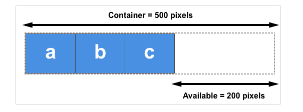

레이아웃이란 특정 공간에 여러 구성 요소를 보기 좋게 효과적으로 배치하는 작업을 의미한다.
CSS로 레이아웃을 작업할 때에는 수직분할과 수평분할을 차례대로 적용하여 컨텐츠의 흐름에 따라 작업을 진행한다.
화면을 수직으로 구분하여 컨텐츠가 가로로 배치될 수 있도록 요소를 배치한다.
분할된 각각의 요소를 수평으로 구분하여 내부 컨테츠가 세로로 배치될 수 있도록 요소를 배치한다.
HTML 문서는 기본적인 스타일을 가지고 있으며 때때로 이 기본적인 스타일이 레이아웃을 설정하는데 방해가 되기도 한다.
이러한 상황을 방지하기 위해 라이브러리를 사용하거나 기본 스타일링을 제거하는 방법을 레이아웃 리셋이라고 한다.
레이아웃 리셋을 통해 원하는 디자인으로 레이아웃을 구현할 수 있다.
* { box-sizing: border-box; }
body {
margin: 0;
padding: 0;
}
Flexbox는 행과 열 형태로 항목들을 배치하는 일차원 레이아웃 메서드이다.
항목들은 부족한 공간에 맞추기 위해 축소되거나 여분의 공간을 채우기 위해 변형될 수 있다.
Flexbox의 적용 방법은 적용할 박스 요소의 부모 박스에 display: flex를 적용하면 된다.
적용된 부모 박스는 수직분할이 기본값으로 자식 박스 요소는 왼쪽부터 차례대로 배치된다.
만약 방향을 지정해주려면 display-direction 속성을 적용하면 된다.
<paraent_selector> {
display: felx;
display-direction: column;
}
display-direction의 속성값에는 row, column, row-reverse, column-reverse가 있다.
기본값으로 수직분할의 형태로 자식 박스 요소는 왼쪽부터 오른쪽으로 차례대로 배치된다.
수평분할의 형태로 자식 박스 요소는 위에서부터 아래로 차례대로 배치된다.
수직분할의 형태이지만 row와 반대로 자식 박스 요소는 오른쪽부터 왼쪽으로 차례대로 배치된다.
수평분할의 형태이지만 column과 반대로 자식 박스 요소는 아래에서부터 위로 차례대로 배치된다.
Flexbox를 원하는 대로 제어하기 위해서는 축(axis)에 대한 정의를 알아야 한다.
축(axis)은 주축(main axis)과 교차축(cross axis)으로 구분한다.
주축은 flex-direction 속성에 의해서 결정된다.
flex-direction 속성값이 row 또는 row-reverse이면 주축은 인라인 방향(가로축)이 된다.
속성값이 column 또는 column-reverse이면 주축은 블록 방향(세로축)이 된다.
교차축은 주축과 수직을 이루는 방향으로 주축이 인라인 방향(가로축)이면 교차축은 열 방향(세로축)이 된다.
주축이 블록 방향(세로축)이면 교차축은 행 방향(가로축)이 된다.
Flexbox의 축들을 기준으로 항목을 정렬할 수 있는 속성에는 justify-content 와 align-items가 있다.
부모 박스에 justify-content 속성을 적용하면 자식 박스를 주축(main axis)을 기준으로 정렬할 수 있다.
속성값으로는 flex-start, flex-end, center, space-between, space-around, space-evenly가 있다.
<paraent_selector> {
display: felx;
justify-content: space-between;
}
기본값으로 Flexbox의 항목들을 시작점부터 정렬한다.
Flexbox의 마지막 항목이 끝선을 기준으로 항목들을 정렬한다.
Flexbox의 항목들을 가운데로 정렬한다.
사용가능한 공간을 Flexbox의 항목들 사이의 공간에 균일하게 배분한다.
사용가능한 공간을 Flexbox의 항목들 사이및 시작점과 끝선을 합친 공간에 균일하게 배분한다.
사용가능한 공간을 Flexbox의 항목들 사이및 시작점과 끝선의 공간에 균일하게 배분한다.
부모 박스에 align-items 속성을 적용하면 자식 박스를 교차축(cross axis)을 기준으로 정렬할 수 있다.
속성값으로는 stretch, flex-start, flex-end, center가 있다.
<paraent_selector> {
display: felx;
align-items: center;
}
기본값으로 Flexbox의 항목들을 교차축 방향으로 Flexbox의 컨테이너를 가득 채운다.
Flexbox의 항목들을 교차축 방향의 시작선에 정렬한다.
교차축이 세로축이면 위, 가로축이면 왼쪽에 정렬한다.
Flexbox의 항목들을 교차축 방향의 끝선에 정렬한다.
Flexbox의 항목들을 교차축의 가운데에 정렬한다.
flex-wrap 속성은 Flexbox의 항목들을 강제로 한줄에 배치되게 할 것인지 또는 여러 행에 나누어 배치되도록 할 것인지 결정하는 속성이다.
속성값으로는 nowrap, wrap, wrap-reverse가 있으며 시작점은 flex-direction에 의해 결정된 방향으로 적용된다.
<paraent_selector> {
display: felx;
flex-wrap: wrap;
}
기본값으로 줄바꿈을 하지 않고 Flexbox의 항목들이 Flexbox의 컨테이너를 벗어나더라도 강제로 한줄에 배치한다.
Flexbox의 항목들이 Flexbox의 컨테이너를 벗어나면 줄바꿈을 하여 여러 행에 나누어 배치한다.
wrap 속성값과 동일하지만 Flexbox의 항목들이 나열되는 시작점과 끝점의 기준이 반대로 배치된다.
즉 줄바꿈이 일어날때 줄바꿈이 역으로 일어난다.
Flexbox가 적용된 부모 박스의 자식 박스 요소는 flex 속성에 값을 적용하여 기본 크기를 바탕으로 필요에 따라 늘리거나 줄일 수 있다.
{ flex: <grow> <shrink> <basis>; }
grow, shrink, basis는 각각 팽창 지수, 수축 지수, 기본 크기를 의미하며 자식 박스 요소에 flex 속성을 주지 않으면 다음과 같은 기본값이 적용된다.
{ flex: 0 1 auto; }
flex에 적용되는 grow, shrink, basis도 각 값을 따로 지정할 수 있다.
<child_selector> {
flex-grow: 0;
flex-shrink: 1;
flex-basis: auto;
}
grow 속성값은 단위가 없고 비율에 따라 박스 크기가 늘어난다.

사용가능한 공간(Available)을 부모 박스의 자식 박스 요소에 적용된 grow 값의 총합으로 나누어 주어진 비율만큼 할당한다.
grow와 반대로 설정한 비율만큼 박스 크기가 줄어든다.
grow 속성과 shrink 속성을 함께 사용하여 비율로 레이아웃을 지정하는 일은 추천하지 않고 grow 속성을 이용하는 방식을 권장한다.
basis 속성값은 박스 요소의 크기를 결정하며 기본값은 auto이다.
basis는 grow 값이 0인 경우에만 basis 속성의 값이 유지되며 width와 동시에 적용하는 경우 basis가 우선된다.